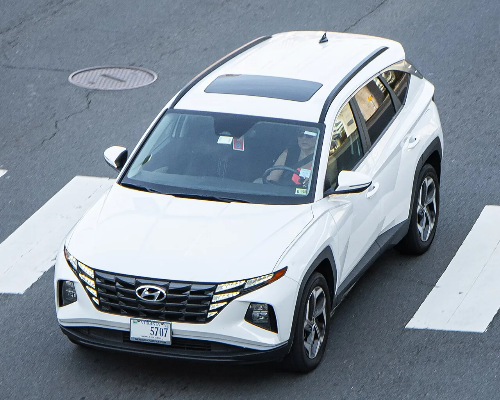

▲ 현대 투싼 하이브리드. 4세대(NX4) 모델은 2021년 출시 이후 부분변경을 거치며 지금도 판매 중이다 ⓒ CarPrism

▲ 중고차 매매단지. 최근 중고차 커뮤니티에서는 주행거리 10만km를 넘긴 한 SUV 매물이 유독 화제가 되고 있다 ⓒ CarPrism
보통 중고차는 주행거리가 10만km를 넘어가는 순간부터 매수 심리가 급격히 얼어붙는다. 엔진·미션 계통의 마모 우려, 소모품 교체 비용, 감가된 잔존가치 때문이다. 그런데 최근 자동차 매체 오토트리뷴이 소개한 한 모델은 정반대다. 10만km를 넘긴 매물조차 \"산다고 난리\"라는 반응이 나올 만큼 꾸준히 팔린다. 바로 현대 투싼 하이브리드다.
1. 어떤 차인가 — 투싼 하이브리드 4세대(NX4)

▲ 투싼 하이브리드 4세대(NX4) 모델. 2021년 출시된 이후 부분변경을 거쳐 지금도 판매되고 있는 세대다 ⓒ CarPrism
오토트리뷴이 추천한 매물은 2021~2022년식 투싼 하이브리드 인스퍼레이션·프리미엄 트림이다. 4세대 투싼은 2021년 국내 출시된 이후 지금까지 부분변경을 거치며 판매되는 세대로, 전장 4,640mm·전폭 1,865mm·축거 2,755mm의 준중형 SUV 체급을 갖췄다. 파워트레인은 1.6리터 가솔린 터보 엔진에 65마력 전기모터를 결합해 시스템 최고출력 235마력을 낸다.
2. 연비 20km/L, 숫자가 의미하는 것

▲ 투싼 하이브리드 실내. 계기판 순간연비 표시상으로는 20km/L 안팎이 찍히는 경우도 있다 ⓒ CarPrism
투싼 하이브리드의 공인 복합연비는 16.2km/L, 도심연비는 17.0km/L(19인치 휠 기준)다. 오토트리뷴은 실제 주행 중 정속 구간이나 하이브리드 모드가 유리한 조건에서는 계기판 순간연비로 20km/L 안팎까지 볼 수 있다고 전했다. 동급 가솔린 SUV의 복합연비가 대개 11~12km/L 수준인 점을 감안하면, 같은 연료비로 30~40% 더 멀리 갈 수 있는 셈이다. 특히 리터당 유가가 오르내리는 시기일수록 이 차이는 체감 유지비에서 크게 벌어진다.
3. 왜 10만km 넘긴 매물이 더 잘 팔리나
10만km 매물이 주목받는 구조적 이유
- 주행거리가 10만km를 넘으면 시세가 한 단계 낮은 구간으로 떨어짐
- 4세대 투싼은 부분변경만 거쳤을 뿐 차체·실내 디자인이 현행 모델과 큰 틀에서 동일
- 하이브리드 시스템 특성상 상대적으로 낮은 rpm 사용 빈도 등으로 엔진 부담이 적다는 인식
- 신차 대비 가격 차이가 1천만원 이상 벌어지는 구간에서 '가성비'가 극대화
오토트리뷴에 따르면 투싼 하이브리드가 10만km를 넘긴 이후에도 꾸준히 거래되는 핵심 이유는 가격이다. 국내 중고차 시장은 통상 주행거리 5만km, 10만km를 기준으로 시세가 한 단계씩 낮아지는 구조인데, 투싼 하이브리드는 이 구간에서도 상품성 대비 가격 매력이 오히려 커진다는 평가를 받는다. 여기에 더해 4세대 투싼은 2021년 출시 이후 지금까지 큰 틀에서 같은 디자인을 유지하고 있어, 주행거리가 많더라도 '오래된 차'라는 느낌이 덜하다는 점도 구매 심리를 낮추는 요인으로 꼽힌다.
4. 실제 시세 동향

▲ 투싼 하이브리드. 10만km 안팎 매물은 신차 대비 절반 수준 가격에 거래되는 사례가 많다 ⓒ CarPrism
오토트리뷴이 제시한 실매물 기준으로 2021년식 인스퍼레이션 트림(9만9천km)은 2,680만원, 같은 2021년식 프리미엄 트림(11만8천km)은 2,000만원 선에 거래되고 있다. 반면 2026년 현재 투싼 하이브리드 신차 최저가는 3,318만원부터 시작한다. 즉 주행거리 11만km에 가까운 매물이라도 신차 대비 1,300만원 이상 저렴하게 구매할 수 있는 셈이다. 트림·연식·옵션에 따라 편차는 있지만, 주행거리가 늘어날수록 가격 하락폭이 커지는 흐름은 뚜렷하다.
5. 구매 전 체크포인트
하이브리드 중고차 구매 체크리스트
- 고전압 배터리 보증: 차대번호(VIN)로 잔여 보증기간·주행거리 반드시 확인
- 하이브리드 경고등 이력: 성능·상태 점검기록부에서 배터리·모터 관련 수리 이력 확인
- 정기 소모품 교체 이력: 엔진오일, 냉각수 등 하이브리드 시스템 관련 소모품 교체 주기 확인
- 연식별 트림 옵션 차이: 인스퍼레이션·프리미엄 등 트림별 안전·편의 사양 비교
다만 주행거리가 많은 하이브리드 중고차를 살 때 반드시 짚어야 할 것은 고전압 배터리 보증이다. 제조사 보증은 통상 차량 등록일과 주행거리 중 먼저 도래하는 기준으로 소멸되기 때문에, 매물의 차대번호를 통해 잔여 보증 기간과 주행거리를 직접 확인하는 절차가 필요하다. 성능·상태 점검기록부와 함께 하이브리드 경고등 점등 이력, 배터리·모터 관련 수리 내역도 함께 살펴야 한다. 이 같은 기본 점검 정보는 자동차 365 공식 사이트에서 확인 가능하다.